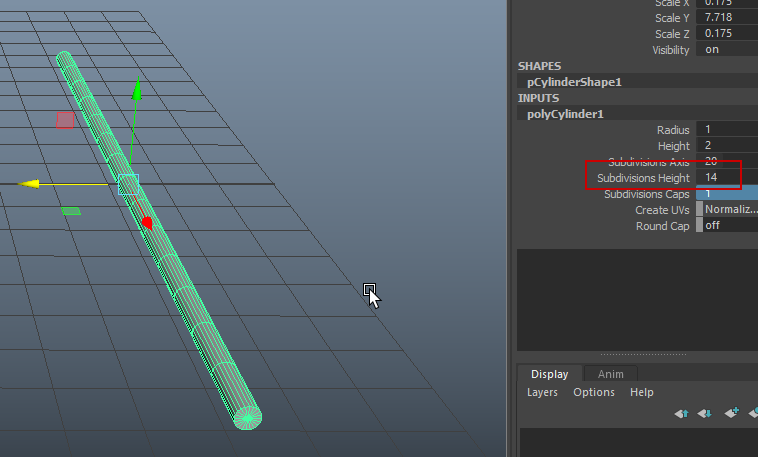

Create a rod with subdivisions

Create a plane with similar number of subdivisions
Make plane nCloth and cylinder collider
In vertex mode select all the boundary points
----------->>Shift select the pole
Under nConstraints select point to surface

 ----------->>Shift select the pole
----------->>Shift select the pole